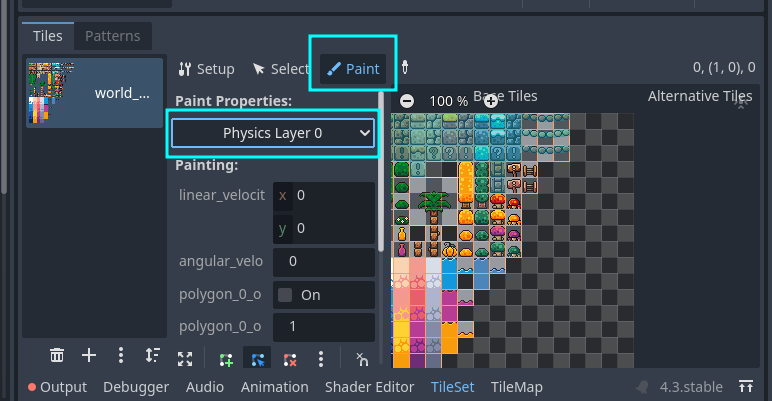
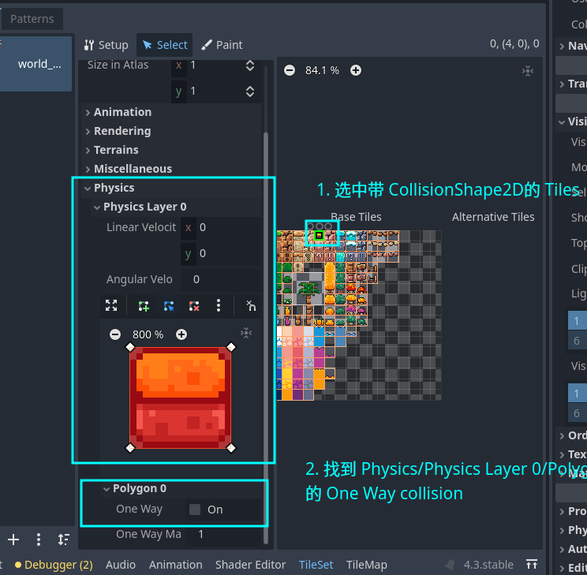
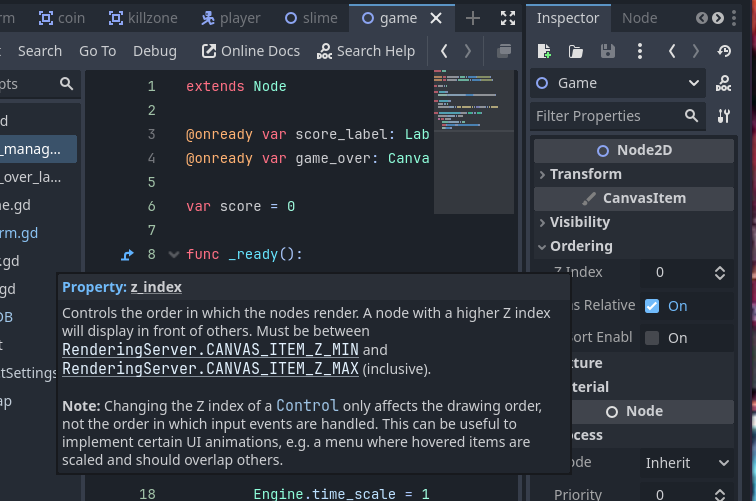
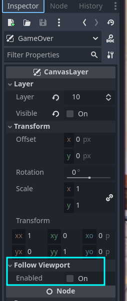
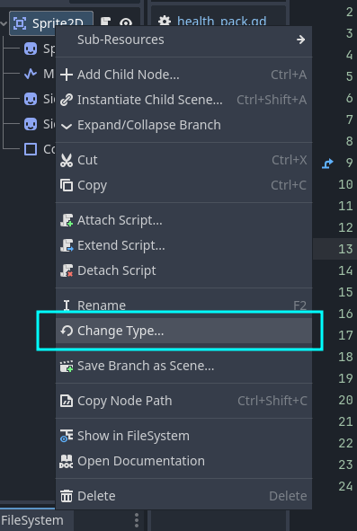
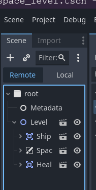

Godot 4 学习日记
Table of Contents
- 1. Day -1: First Game
- 2. Day 0: 学习 Node 的工作方式以及文档的查阅
- 3. Day 1: 给 Brackeys 的教程例子添加额外功能
- 4. Day 2: 游戏开发中的物理
- 5. Day 3: 给游戏的鼠标时间添加手柄支持
- 6. Day 4: GDQuest 的 Learn 2D Gamedev From Zero With Godot 4 课程学习: M4. TO SPACE AND BEYOND
- 7. Day 5: GDQuest 的 Learn 2D Gamedev From Zero With Godot 4 课程学习: M5. LOOT IT ALL
- 8. Day 6: GDQuest 的 Learn 2D Gamedev From Zero With Godot 4 课程学习: M6. LOOTING
- 9. Day 7. M7. Telling a Story
- 10. Day 9. M8. Start a Dialogue
- 11. Day 11. Top Down Movement
- 12. Day 13. Learning Shader in Godot 4
这里记录了我学习 Godot 4 的轨迹, 以及对学习时的一些疑问进行解答.
准确来说这篇文章是日记集, 熟悉 Godot 引擎的功能不是一两天的事情, 因此会分为 Day 0, Day 1 这样的章节,
每天进行学习内容输出, 也借此保证自己的学习进度.
同时也想尝试新的学习方法, 达到尽可能以最小天数学习并掌握一项技能, 但每天不会超负荷(在精力不足的情况下)地学习.
曾经的超负荷学习并不能让我以最小天数掌握一门技能, 反而起到反效果, 伤身又费神, 更加拖慢了学习进度, 而且学习效果也不够好.
在不拉长学习进度的前提下学习是能够快速并且好好地掌握一项技能的, 比如明明可以一天内学习完某个知识, 非得拉长到几天, 这样反而容易忘记前几天所学的内容.
但人的精力是有限的, 也不可能无限缩短学习进度, 像"必需在多少天只能学习完某某技能"的赶进度式学习是不可取的, 毕竟不同知识的复杂度是不同的, 而且每个人的知识储备也是不一样的,
而知识储备会影响一个人的学习和理解速度, 种种因素导致了一个人很难准确估算出学一个技能需要多少时间, 与其这样不如在保证精力充沛的情况下学到哪就到哪, 等休息够了继续上路,
直到掌握为止, 相信这个时间不会太长.
1. Day -1: First Game
这里
Day -1是因为在写这篇文章之前就已经学习了 1 天了,Day 0才是这篇笔记的起稿日期.
第一天跟随着 Brackeys 的 Godot 4 教程: How to make a Video Game - Godot Beginner Tutorial.
重点在于熟悉 Godot 4 的一些功能, 视频的内容能够理解的就尽量理解, 不理解先记录下, 做完项目后找答疑.
视频长度为一小时 17 分钟, 自己跟下来大概两个小时左右就可以完成, 视频的最后还有一些对游戏的拓展建议, 这个我留到后面有空做了.
这个是必做的, 因为熟悉引擎对于新手来说是很重要的事情.
在我看到这个视频的时候,
Godot 4刚发布4.3版本了, 而视频中使用的Godot 4是4.2版本的,主要差别在与
4.2中的TileMap在4.3中被移除了,TileMap的Layers被单独拆开成多个TileMapLayer节点了.目前
Godot还在不断的发展中, 这些变化对于我个人来说是可以接受的, 而且我认为作为Godot的用户, 也要了解版本之间一些重要变迁(也有人指出文档目前是不完善的, 所以需要参考Godot的源代码).这对于
Godot 4的新用户来说是有益处的, 因为目前Godot 4的教程相比Godot 3的还是少很多, 如果你知道 4 和 3 的差别在哪里,那么 3 的教程也可以使用了.
然后又花了一小时 30 分左右的时间跟练完 Brackeys 的另外一个 Godot 教程: How to program in Godot - GDScript Tutorial.
这个视频时长为 58 分钟, 是让初学者快速上手 GDScript 的教程, 对于没有任何编程经验的人来说可能需要更长的时间完成跟练.
还有一点需要注意的是, 目前
Godot 4的文档上关于GDScript的ENBF还是Godot 3的, 所以不要参考上面的内容来学习 4 中的GDScript.
所以这就是我一天的学习轨迹了.
1.1. 心得
1.1.1. Scene 和 Node 和 Script 的关系
Godot 中一切皆为 Node, 一个 Node 又可以由若干个其它 Node 构成, 有时候我们想复用这个 Node,
那么可以把这个 Node 保存为一个 Scene 来隐藏该 Node 的构成细节, 并以该 Scene 来作为其它 Node 的子 Node 进行复用.
简单点来说 Scene 就是 Node 的封装.
Script 更像是 Scene 或 Node 的配置表, 它是 Scene 或者 Node 的 Inspector 高阶版: 通过代码编写逻辑进行配置,
基本上一切可以在 Inspector 上做的事情都能在 Script 中完成(, 注意定语"基本上").
在封装 Scene 对其内部根节点添加 Script 的话, 那么在任何场合下使用该 Scene 都会让 Script 生效, 也就是全局生效.
如果不是在封装时对 Scene 的内部根节点添加 Script, 而是在使用该 Scene 时为其添加 Script, 那么 Script 则不是全局生效.
按照面向对象的说法, Scene 封装时就是一个类, 使用该 Scene 时它就是一个实例.
1.1.2. 什么时候用 Node2D, 什么时候不用 Node2D
视频有时候会用 Node 作为其它节点的父节点进行分组, 而不是使用 Node2D 分组.
这是因为 Node2D 有变换相关的属性, Node2D 的子节点(如果这些子节点的类继承链上有 Node2D)会跟随着父节点 Node2D 进行变换.
1.1.3. CharacterBody2D 和 AnimatableBody2D 的使用
https://docs.godotengine.org/en/stable/classes/class_characterbody2d.html#description
CharacterBody2D 和 AnimatableBody2D 都提供物理实体(physics bodies), 物理实体并不受物理(physics)的影响, 物理实体只会受另外的物理实体影响.
所谓的"不受物理的影响"是指不受引擎的物理属性影响, 比如重力和摩擦力.
CharacterBody2D可以受到物理属性的影响, 这需要自行实现.具体请参考文档: https://docs.godot.community/tutorials/physics/using_character_body_2d.html#what-is-a-character-body.
CharacterBody2D 和 AnimatableBody2D 的区别在于:
CharacterBody2D 节点专门用于玩家控制的物体, 提供的 move_and_slide() 方法专门用来移动节点并进行碰撞检测, 有了这个方法开发着就能让玩家通过输入控制该节点了.
AnimatableBody2D 节点只提供了碰撞检测, 并没有提供 move_and_slide() 方法控制节点的移动, 也不受到外力(物理)影响移动, 它的移动路线一般比较固定, 通常配合代码或 AnimationPlayer 节点来实现,
玩家基本没法通过输入来控制它的移动.
因此在视频里面, CharacterBody2D 用来实现游戏的主角, AnimatableBody2D 用来实现移动的平台.
这里需要注意的是, 视频中的敌人 Slime 同样也是有着固定路线, 但游戏是允许玩家角色和 Slime 相互"重叠"的, 而不是碰撞,
所以只是使用了 Area2D 作为 Slime 的子节点用于判断玩家是否和 Slime 发生接触,
固定路线是结合 RayCast2D 来检测 Slime 是否与 CollisionObject2D 进行碰撞. CollisionObject2D 派生出 Godot 4 中所有 2D 物理对象类,
也就是 Godot 4 中所有的物体碰撞都能通过 RayCast2D 来检测.
1.1.4. TileMap (TileMapLayer) 的使用
视频很详细地描述了 TileMap 的使用, 如何绘制地图/背景, 以及如何为 Tile 设置物理层(也就是哪些 Tiles 需要物理碰撞, 碰撞形状如何).
视频中在制作 platform 时演示了启用 CollisionShape2D 中的 one_way_collision 属性来让玩家角色可以下面起跳直接穿过 platform 并落到 platform 上.
当时就在想 TileMap 也是否可以呢? 答案是肯定的.
视频中设置 Tiles 的物理层是在:
编辑器左边的
Scene栏单击选中TileMap/TileMapLayer;
Figure 1: 选中 TileMapLayer
双击
Tiles或者点击编辑器底部的TileSet进入Tiles的编辑界面.
Figure 2: 进入 TileSet
视频中可能一句带过了
TileSet和TileMap的作用.这里就着重提一下:
TileSet是用来设置Tiles的, 包括哪些Tiles有物理碰撞, 哪些Tiles看作一块Tile等等.在设置好了
Tiles后就可以切换到TileMap中使用Tiles对场景进行绘制.在
TileSet/Paint中找到我们所设置的物理层
Figure 3: 为 Tiles 设置 CollisionShape2D
可惜的是, one_way_collision 并不在 TileSet/Paint 中, 而是在 TileSet/Select 中,

Figure 4: One Way Collision in TileSet
2. Day 0: 学习 Node 的工作方式以及文档的查阅
在刚开始的时候对节点是不太那么熟悉的, 因此我想着找一份对各个节点有个大概介绍的资料, 阴差阳错之下在B站找到了 Godot工作流 与 Node节点 这个教程,
这个教程是意外宝藏, 讲述了 Godot 的节点是怎么工作的, 比如加载进行内存的顺序, 初始化的顺序, 以及节点的一些重要 virtual 方法.
为什么说是宝藏? 因为我买了
GDQuest的课程, 课程并没有详细的讲到这些内容.个人认为了解节点的工作流是很有必要的, 当然不是说
GDQuest的课程不好, 实际上好多课程都没讲,要不是因为这个教程我都不会注意到这一块的内容.
virtual 方法是 Godot 中的一个概念, 意味着可以被用户覆写的方法, 换一种说法是回掉函数(callbacks)/钩子(hooks), 在特定时机下发生调用.
比如 _ready() 就是节点初始化完毕后就会被自动调用, _tree_entered() 就是节点在进入场景树(SceneTree)后被调用.
在官方文档的 Methods 中可以看到一些方法被打上 virtual 的标签. 另外还有 const, vararg 和 static 等标签来对方法做标识.
理解这些标签的含义是掌握文档使用的第一步,
const: 方法的调用不产生任何副作用, 也就是不改变内存. 比如 print 函数就是一个有副作用的例子, 因为它是改变了标准输出才能打印东西.
vararg: 方法接受不固定数量的参数.
static: 方法为静态方法(类方法), 也就是直接通过类就可以调用了, 而不是通过实例进行调用.
除了查阅在线文档以外, 也可以按 F1 来打开 Godot Editor 的帮助手册进行查阅.
还有一点需要注意的是, GDScript 的出现是为了让编程语言高度服务于游戏的编辑器, 在编程时可以通过鼠标 hover 在节点的 Inspector 面板上的选项名上显示出选项在 GDScript 中的属性名,
这个名字是可以用到编程上的(, 当然有些选项是只能在编辑器上进行设置).

Figure 5: 鼠标hover查看属性名, 以查看 Ordering 中 Z Index 的属性名为例
另外, Godot 中关于节点的文档很详细列出了继承关系, 这方便开发者能够系统地掌握节点的知识, 并且有些节点的文档还很贴心的在下面给出例子和教程链接.
Godot的文档绝对是我个人开发生涯中阅读过最舒服的那一类文档了, 不仅提供了API的说明, 而且还提供了一系列的使用例子, 内容齐全而又简单明了.
3. Day 1: 给 Brackeys 的教程例子添加额外功能
3.1. 视差背景 (Parallax Backgrounds)
3.2. 角色站在平台上时, 按下穿过平台回到下一层
实现参考: https://www.youtube.com/watch?v=chGgBuud_Uk
注意这是 Godot 3 的教程, 但是基本上可以用在 Godot 4 中.
实现思路很简单, 在平台 platform 上添加一个 Area2D 节点来检测玩家角色是否站在平台上,
当检测到角色站在平台上时(会触发 Area2D 节点的 body_entered 信号)并且(通过 unhandled_input 方法)判断角色按了特定键, 就禁用平台的 CollisionShape2D 节点(CollisionShape2D.disabled = true),
在角色离开了 Area2D 的区域时(会触发 Area2D 节点的 body_exited 信号)便恢复平台的 CollisionShape2D 节点(CollisionShape2D.disabled = false).
相对于视频的方法, 本人做出了一部分调整, 没有直接修改节点 Area2D 的 monitoring 属性来控制是否有物体进入区域, 而是为 platform 定义了一个 is_on_the_platform 的变量来记录角色是否站在平台上.
做完这个功能后突然冒出一个想法: 能否改变
One Way Collision的方向呢?答案是可以,
CollisionShape2D是Node2D的子类, 可以通过设置rotation_degrees或者rotation属性来设置旋转角度,又或者通过
rotate方法来设置旋转角度来达到改变One Way Collision的方向.不过这并非最好的解决办法, 因为这也会改变
CollisionShape2D的shape的方向.目前官方推荐的方法是使用
ShapeCast2D来完成, 这个以后再尝试了.
3.3. 添加 Game Over 界面
思路: 使用 CanvasLayer 节点来绘制界面, 给 CanvasLayer 添加一个 ColorRect 子节点, 再给 ColorRect 节点添加一个 Label 子节点和一个 Button 子节点,
Label 子节点用来显示 Game Over, Button 子节点用重新开始游戏.

Figure 6: Godot 4 简易 Game Over 界面
这里有两个细节需要注意,
一是 CanvasLayer 的 follow_viewport_enabled 属性要设置为 false, 这样 CanvasLayer 就不会跟着相机运动, 而是锚定在屏幕的固定位置.

Figure 7: 禁用 CanvasLayer 的 viewport 跟随
不管相机如何移动, CanvasLayer 都会出现在屏幕的固定位置上.
二是让 ColorRect 子节点占满整个屏幕, 做法很简单, 设置它的 Anchor Preset 属性为 Full Rect.

Figure 8: ColorRect FullRect
图中这两个地方都可以设置.
剩下的就是在角色进入 killzone 时显示 Game Over 界面, 点击 Game Over 界面的 Try again 时隐藏 Game Over 界面并且重置游戏场景.
这部分很简单就不详细讲了.
3.4. 在 Game Over 时禁止用户的部分输入
现在有个问题: 显示 Game Over 界面后仍然能够操作角色.
解决问题就是禁止角色被操作, 我的解决思路如下:
在 player.gd 的 _process_input(delta) 调用 slide_and_move() 添加一个判断.
我这里进入 Game Over 状态时, player.gd 会调用 set_process_input(false) 方法来禁止节点的 _input(event) 方法调用,
重新开始游戏时调用 set_process_input(true) 方法恢复 _input(event) 方法调用.
可以通过 is_processing_input() 方法来获取 _input(event) 方法的启用状态,
因此完整的逻辑是先判断 _input(event) 方法的状态, 如果是启用状态那么允许调用 slide_and_move();
否则, 在禁用状态下输入了 jump/down/move_left/move_right 其中一个动作就不再调用 slide_and_move().
在判断是否输入了指定动作时, 需要使用 Input.is_action_pressed(action) 而不是 Input.is_action_just_pressed(action) 进行判断.
前者是有 echo 的, 也就是说如果一直按住某个 action 不放, 那么这个 action 就会以固定间隔一直触发; 后者则没有, 它只能检测用户在当前帧中的的输入,
这就是为什么 jump action 需要用它来判断, 我们并不需要玩家一直按着 jump 一直触发跳跃动作.
4. Day 2: 游戏开发中的物理
5. Day 3: 给游戏的鼠标时间添加手柄支持
6. Day 4: GDQuest 的 Learn 2D Gamedev From Zero With Godot 4 课程学习: M4. TO SPACE AND BEYOND
主要是跟着课程进行练习, 整体还算简单.
个人觉得课程很多东西都讲得很详细, 在学习过 Brackeys 的教程并且经过复盘后, GDQuest 的这些入门课程很多都是一眼过.
不过 GDQuest 也给 Brackeys 里面用到的一些节点和功能进行补充, 所以总体上来说 GDQuest 的价格还是值得的,
也有介绍一些游戏设计方面的内容, 比如 "转向"(steering)以及飞船加速的实现, 并非单纯介绍引擎的使用, 不过剩下的也没什么可说的.
目前课程还在更新, 一共 19 个 modules, 目前更新到 M9.
7. Day 5: GDQuest 的 Learn 2D Gamedev From Zero With Godot 4 课程学习: M5. LOOT IT ALL
7.1. 一些有趣的知识点
7.1.1. L3. Make The Ship Interact
- 改变节点的类型

Figure 9: 改变节点的类型
如果在改变前给节点添加了脚本, 那么脚本所拓展的类型也应该跟着改变, 否则脚本会报错.
- Remote 场景树
在调试运行游戏时, 左边的场景树会多出
Remote和Local两个选项卡.
Figure 10: Remote 和 Local 场景树
如图所示,
Local的内容就是平时看见的场景树.
Figure 11: Remote 场景树
而
Remote场景属则是节点在内存中的可视化, 动态地展示了整个游戏场景中的节点在运行时加载/组织/释放等情况.如果
ship接触了health_pack, 那么health_pack就会在Remote场景树中消失.
7.1.2. L4. Add The Health Bar
- Control 节点
Control节点是UI相关节点的基类, 与Node2D一同继承于CanvasItem.通常
Control节点会作为 Container 节点(Container继承于Control)的子节点进行布局(layout)(, 另外也可以看一下油管上的这个关于Container的教程).简单点说, 如果想用
Godot来做一些软件(, 当然也包括游戏), 那么必定是避不开按钮(buttons), 标签(labels)以及文本编辑(editing)这些东西, 那么Control节点就是必须要掌握的.官方也给出了一些列关于
GUI的教程.CanvasItem支持变换, 因此Control也支持变换. 我们可以让Control节点作为Node2D的子节点进行变换.
7.1.3. L6. Add Collectible Gems
- Group, 分组功能
Godot的Group可类别其他软件中的tag, 或者比作Linux中的User Group.Godot可以针对Group内的所有节点调用一个方法进行同时处理, 也可以对它们进行统一通知(notification).在
Godot 4.3中,Group分成Scene Groups和Global Groups, 这两者分别代表了Group的两种作用域:Scene Groups表示Group只在创建了该Group中的Scene中可见以及可编辑,Global Groups则表示Group在整个项目中可见以及可编辑.课程中介绍了如何设置
Group以及如何使用Node.is_in_group(group: StringName)判断Node是否属于group分组.
7.1.4. L7. Spawn Items Randomly
7.1.5. L8. Filter Items From Detecting Each Other
这章主要是关于 collision 的 layer 和 mask 属性的作用.
7.1.6. L9. Make The Items Float
介绍 Tween 类的使用, Tween 是可编程版本的 AnimationPlayer.
8. Day 6: GDQuest 的 Learn 2D Gamedev From Zero With Godot 4 课程学习: M6. LOOTING
8.0.1. L3. The outline thickens
介绍了如何加载 shader. 这里需要强调一下就是 shader 是全局生效的, 也就是说你为一个场景应用了一个 shader,
那么该场景的所有实例都会共用一个 shader, 如果通过代码对其中一个实例的 shader 变量进行修改, 那么其它实例也会受到影响,
因此 Godot 提供了 Local To Scene 选项来解决这个问题: 为每个场景实例拷贝一份 shader.
8.0.2. L4. The chest open animation
比较详细的介绍了 AnimationPlayer 以及 Animation Editor 的用法.
8.0.3. L5. Open The chest
着重介绍 _input_event(viewport: Viewport, event: InputEvent, shape_idx: int) 方法的用法.
viewport: 节点所在的 viewport.
event: 表示了输入事件, 可以是鼠标运动, 鼠标点击, 键盘输入或其它输入.
shape_idx: 一个物理对象可以有多个 collision shapes, 该参数表示被点击中的 collision shape 的索引.
_input_event() 方法只针对物理对象(physics object), 其它节点需要用 _unhandled_input() 以及 _input() 方法处理输入.
所谓的物理对象就是能够检测物理碰撞的对象.
以
2D来讲, 在Godot中,CollisionObject2D是所有Collision对象的父类,另外, 物理实体(
physics bodies)额外继承多一层PhysicsBody2D类.https://docs.godotengine.org/en/stable/tutorials/physics/physics_introduction.html#collision-objects
3D的物理对象是2D的对应版本.
8.0.4. L6. Spawn random loot
主要讲如何计算打开宝箱时物品散落的位置, 算是设计方面的内容.
8.0.5. L7. Animate the collectibles
针对上一章物品散落进行动画优化, 主要深入的介绍了 Tween 类的使用:
tween.set_parallel()可以让后续的tween.tween_property()/tween.tween_method()等方法同时进行, 而不是逐个执行;tween.set_trans()用来设置两个值之间的插值如何随着时间进行变化, 也就是设置插值函数(interpolation function), 有人做出了各种插值函数的可视化演示, 在这个演示中, 水平轴方向的变化(红线的移动速度, 也就是时间的变化)是固定不变的, 垂直轴方向的变化就是插值的变化.tween.set_ease()用来设置缓动函数(ease function), 也就是设置插值的变化率(快慢), 通俗点说就是垂直轴方向的变化大小.
这里有插值函数和渐变函数配合结果可以参考这个网站: easing.net.
8.0.6. L8. The programmer's dictionary
主要介绍如何使用 Godot 编辑器内置的帮助文档.
8.0.7. L9. Let's experiment
课程练习.
9. Day 7. M7. Telling a Story
这一模块主要是介绍 UI 节点的使用, 如何为 2D 以及 3D 游戏构建菜单.
9.0.1. L2. Exploring UI node anchors
个人建议先过一遍官方的 Size and Anchors 再来看 GDQuest 的课程, 官方比较清晰地描述了 Godot 是如何描述节点元素在窗口中的大小以及位置的, 还附带了代码例子.
回到 GDQuest 的课程上, 介绍了 HBoxContainer/VBoxContainer/GridContainer 三种用于布局的 Container 节点.
9.0.2. L3. Your first UI Scene
9.0.3. L4. Designing an interface theme
这一章主要是介绍如何创建 theme 文件并应用它.
给场景的根目录应用 theme 会让该 theme 作为场景中所有元素的默认样式.
介绍了主题编辑器的用法.
介绍了如何去除按钮的轮廓.
https://forum.godotengine.org/t/remove-outline-when-clicking-button/8255/2
9.0.4. L5. Your first words
通过 tween.tween_property() 来设置 RichTextLabel 节点的 visible_ratio 属性, 实现文字动画.
9.0.5. L6. Animating the text and playing sounds
使用 AudioStreamPlayer 为上一节课程的文字动画进行配音.
9.0.6. L13. Nailing the button
这一章有一个很重要的细节, 那就是 Tween 在完成所有动画之后就会被自动释放, 储存 Tween 的变量在 Tween 被释放后变成 null.
也可以通过 Tween.kill() 方法来手动提前释放.
9.0.7. L14. Bringing text to life
主要介绍了如何在 RichTextLabel 中使用 BBCode 来控制文本的样式, 全程 Bulleting Board Code (公告板代码).
BBCode 只能用在 RichTextLabel 节点中, 具体用法看官方参考.
10. Day 9. M8. Start a Dialogue
10.0.1. L2. Refactoring the dialogue UI
We want to give choices to players in conversations and give them different answers depending on their decisions.
A good way to start is by writing a sample branching dialogue on paper or in a text file.
在 M08.start_a_dialog_workbook/assets/practices/inventory_slot_button.gd 可以仔细研究如何使用 Container 进行布局.
10.0.2. L3. Refactoring the code
介绍如何重构, 对于有编程经验的人来说可以快速过一遍.
10.0.3. L4. Interesting choices
介绍如何实现在 L1 中对话分支图, 让玩家能够在对话中实现选项, 就像"辐射"系列一样.
10.0.4. L5. Stronger guarantees
- 给新手开发人员科普类型系统的重要性以及缺点.
- 介绍使用
class_name关键字来定义类型, 作为类型系统中的类型. - 介绍
Godot中的Resource对象: 一切可以保存在硬盘以及在Inspector中进行编辑的对象, 以及如何拓展该类型.
10.0.5. L6. Strong choices
上一节课的延续
10.0.6. L7. Making the editing experience nicer
介绍一些常用标注(annotation)的使用.
以及解释什么是运行在编辑器中的脚本(, EditorScript 又叫工具脚本, 作用是对编辑器进行拓展), 什么是运行在游戏中的脚本(为gameplay服务).
一份脚本可以同时用于编辑器以及游戏中, 不过你需要禁止游戏代码运行在编辑器中.
Godot提供了Engine.is_editor_hint()来判断当前代码是否运行在编辑器中.
这节课程主要是教我们编写工具脚本, 如何为 Inspector 里面的属性编写注释.
上完这门课程后可以看看这个视频作为补充, 还有别忘记过一遍官方教程: Running code in the editor.
11. Day 11. Top Down Movement
11.0.1. L2. The Character controller
这门课程有一段话很好的介绍了 Godot 中 4 种物理对象的作用以及区别.
What other types of physics nodes are there? Like most engines, Godot has four main types of physics nodes: The Area2D node detects overlap with other physical nodes but doesn't handle collisions. You use it to detect when entering a specific area, to trigger interactions, loot pickups, or shoot bullets. The CharacterBody2D node detects collisions and can move a character smoothly on uneven terrain. You can also use special functions to control the motion and create precise character controllers. It works well for characters, vehicles, enemies, and other objects that need to move around. The RigidBody2D node is an object that simulates real-life physics. It will bump, bounce, fall, and so on. It is more complicated to control than any other node since you must set up forces, impulses, etc. You would use it for objects that need to interact with the world realistically, like a ball, crate, or physically simulated debris. It's also used for different characters and vehicles, like the birds in a game like Angry Birds. The StaticBody2D node is a static obstacle for CharacterBody2D and RigidBody2D nodes. You can use it for walls and floors. Anything that doesn't move. Use a variant of it, the AnimatableBody2D node, to create moving platforms and other moving obstacles that should block the player and mobs. In this module, you'll use CharacterBody2D to make a character controller and StaticBody2D to make walls.
还有课程中的这句话很有启发性:
As developers, our role is to find shapes that give the illusion that the game's physics and visual layers line up well .
简单点说开发人员的工作就是让物理层和视觉层对应.
课程亮点: 很好的解释了 move_and_slide() 为什么叫这个名字.
11.0.2. L3. Looking in different directions
实现 input buffer 解决按键松开的时机判断过于严谨的问题.
11.0.3. L4. Placing Obstacles
介绍 CollisonPolygon2D 的编辑器用法.
提示: 尽可能不要绘制太过复杂的多边形, 如果实在遇到复杂的多边形, 尽可能使用多个简单的多边形来组合得到该多边形, 这样可以提高游戏性能.
11.0.4. L5. Adding inertia and animations
介绍如何实现加速度(匀加速直线运动)以及介绍了骨骼动画(课程的素材是自己实现的骨骼动画, Godot 也有自带 2D 骨骼动画系统).
11.0.5. L6. Graphical Effects
12. Day 13. Learning Shader in Godot 4
从 Godot 3 和 Godot 4 中的 Shader Language 变化
参考资料:
- 书籍 "Shaders in Godot 4: Add stunning visual effects to your games"
- GDQuest 课程 Shaders Secrets
以前的 4.2 的版本以及 4.3 版本的 Godot 在 Shader 上发生了一些变化:
depth texture 的值的取值从 0 到 1, 变成了从 1 到 0: